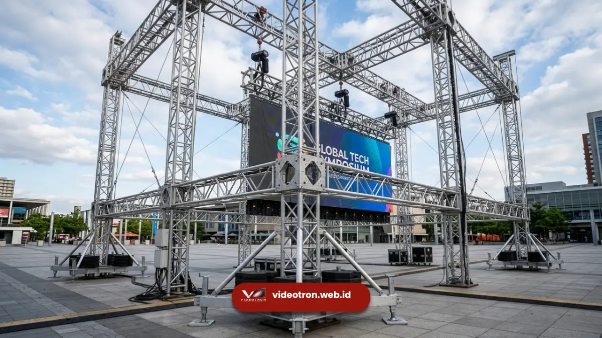

Ketahui faktor penentu biaya ground support installation videotron dan dapatkan estimasi sesuai kebutuhan event di videotron.web.id
Biaya ground support installation videotron ditentukan oleh ukuran layar, kompleksitas rangka, durasi sewa, dan kondisi lokasi event.
Semakin besar dan tinggi videotron yang dipasang, semakin kompleks pula struktur rangka dan sistem pemberat yang dibutuhkan.
Memahami faktor-faktor ini membantu Anda menyusun anggaran event secara lebih realistis sejak tahap perencanaan.
- Biaya ground support installation dipengaruhi oleh ukuran layar, tinggi rangka, dan jumlah panel videotron yang dipasang.
- Lokasi event turut menentukan biaya, terutama terkait aksesibilitas dan kebutuhan sistem pemberat tambahan.
- Durasi sewa dan kompleksitas teknis instalasi juga menjadi komponen penting dalam estimasi biaya.
- Estimasi biaya sebaiknya dikonsultasikan langsung dengan tim teknis agar sesuai kebutuhan spesifik event Anda.
Apa Saja Faktor yang Memengaruhi Biaya Ground Support Installation Videotron?
Faktor utama yang memengaruhi biaya ground support installation videotron meliputi ukuran layar, tinggi rangka, kondisi lokasi, dan durasi penggunaan.
Kombinasi faktor-faktor ini menentukan seberapa besar sumber daya teknis yang dibutuhkan untuk memasang struktur secara aman dan stabil.
Ukuran layar menjadi faktor paling signifikan karena memengaruhi jumlah panel, luas rangka, serta jumlah titik tumpu yang diperlukan.
Videotron berukuran besar membutuhkan rangka yang lebih tinggi dan lebih lebar, sehingga jumlah material dan tenaga kerja yang digunakan juga bertambah.
Tinggi rangka turut memengaruhi kebutuhan sistem pemberat. Semakin tinggi struktur ground support, semakin besar pula gaya angin yang bekerja pada rangka, sehingga dibutuhkan pemberat tambahan untuk menjaga kestabilan.
Kondisi ini secara langsung berdampak pada volume material yang harus disiapkan.
Mengapa Biaya Ground Support Installation Bisa Berbeda Antar Event?
Biaya ground support installation dapat berbeda antar event karena setiap lokasi memiliki karakteristik permukaan, akses, dan kebutuhan teknis yang berbeda pula.
Event yang berlangsung di lapangan terbuka dengan akses mudah umumnya memiliki proses instalasi yang lebih efisien dibanding lokasi dengan akses terbatas.
Beberapa penyebab perbedaan biaya antar event antara lain:
- Kondisi permukaan tanah yang memerlukan perataan atau alas tambahan sebelum rangka didirikan.
- Jarak akses lokasi dari titik bongkar muat material, yang memengaruhi waktu dan tenaga mobilisasi.
- Kebutuhan tambahan seperti sistem pengaman ekstra pada lokasi dengan potensi angin kencang.
- Durasi sewa videotron, di mana event multi-hari umumnya memiliki struktur biaya berbeda dibanding event satu hari.
Perencanaan awal yang matang membantu memperkirakan kebutuhan teknis secara lebih akurat, sehingga estimasi biaya yang diberikan dapat lebih sesuai dengan kondisi lapangan sebenarnya.

Penggunaan rangka ground support untuk videotron outdoor.Bagaimana Cara Menghitung Estimasi Biaya Instalasi Videotron?
Estimasi biaya instalasi videotron umumnya dihitung berdasarkan kombinasi ukuran layar, tinggi rangka, durasi penggunaan, dan kompleksitas lokasi.
Perhitungan ini biasanya dilakukan setelah tim teknis melakukan survei awal terhadap lokasi event.
Beberapa komponen yang umum menjadi dasar perhitungan biaya:
- Luas total layar videotron yang akan dipasang, dihitung dari jumlah panel dan ukuran per panel.
- Tinggi struktur rangka yang dibutuhkan sesuai kebutuhan sudut pandang audiens.
- Kompleksitas sistem pemberat yang disesuaikan dengan kondisi angin di lokasi.
- Durasi sewa, termasuk waktu instalasi, penggunaan selama event, dan pembongkaran setelah acara selesai.
- Kebutuhan tenaga teknis tambahan apabila instalasi dilakukan di lokasi dengan akses terbatas.
Tips Menyusun Anggaran Ground Support Installation
Menyusun anggaran ground support installation sebaiknya dimulai dengan menentukan ukuran videotron yang dibutuhkan sesuai kapasitas venue dan jumlah audiens.
Setelah itu, anggaran dapat disesuaikan dengan mempertimbangkan durasi event serta kondisi lokasi yang telah disurvei.
Menyediakan ruang cadangan anggaran untuk kebutuhan teknis tambahan, seperti sistem pemberat ekstra pada kondisi cuaca tidak menentu, juga membantu mengurangi risiko biaya tak terduga saat hari pelaksanaan event berlangsung.

Hawa Nadira
LED Technology Consultant dan Visual Educator
Konsultan dan spesialis solusi display digital berdedikasi tinggi yang fokus membagikan panduan edukatif mengenai penerapan teknologi layar LED videotron untuk kebutuhan interior modern di Indonesia.